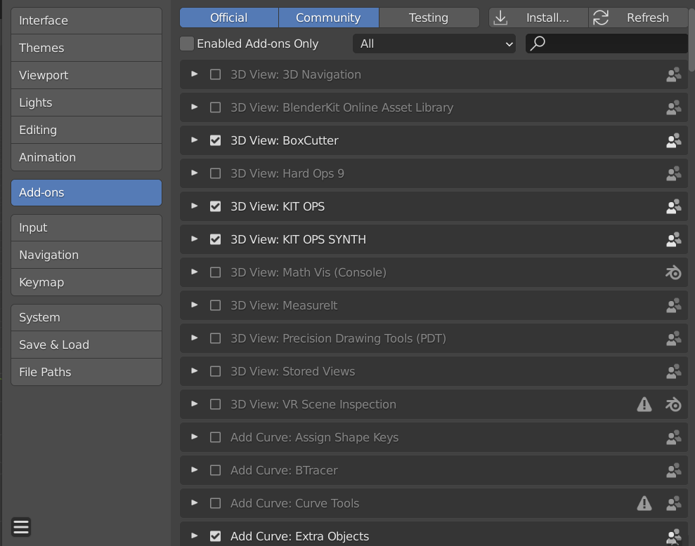
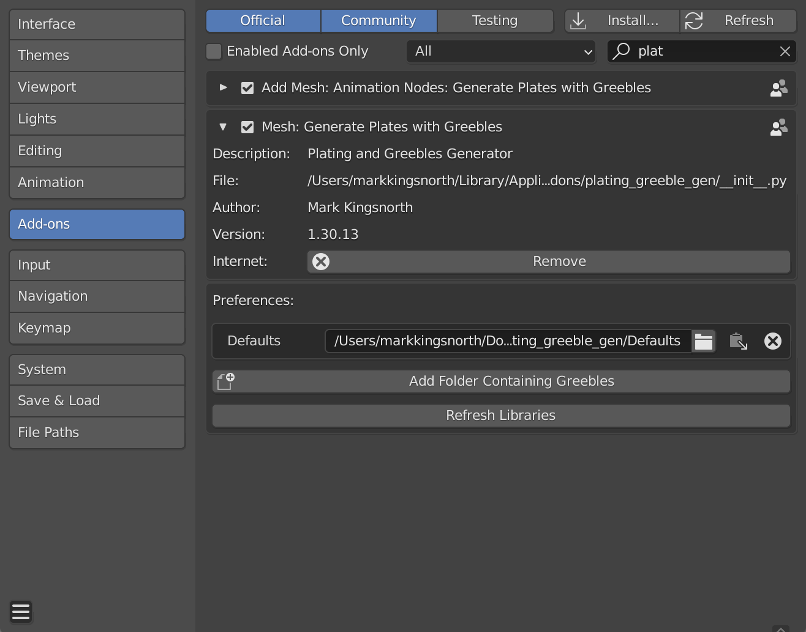
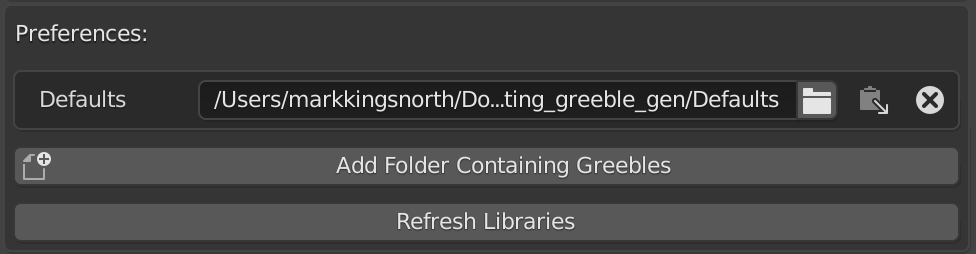
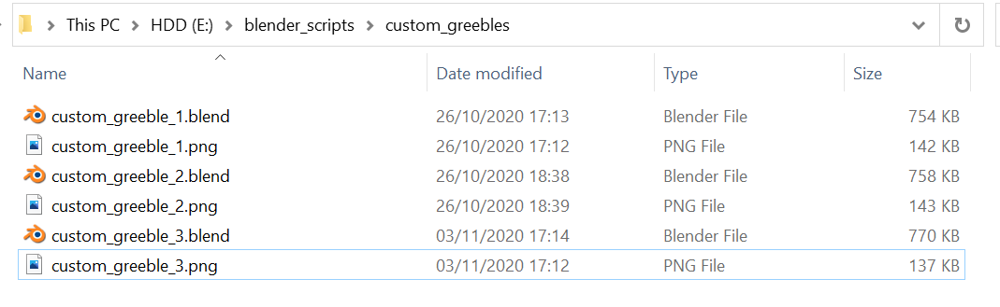
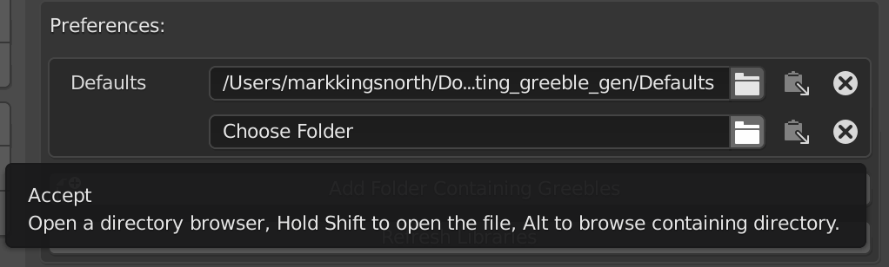
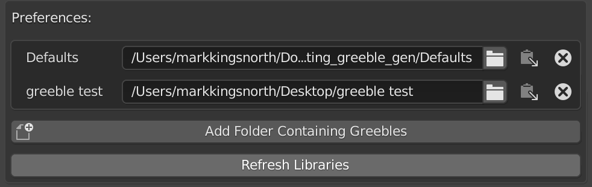

Greeble Libraries
{kind=link}
You can create your own greeble libraries that can be loaded into Blender.
Installing a Greeble Library
Go to Edit -> Preferences and select the Add-Ons tab if it is not selected already:
Then, find the Plating Generator add-on by starting to type ‘Plates…’ in the search box. Expanding the ‘Mesh: Generate Plates with Greebles’ entry should give you a small preferences screen:
There is a ‘Preferences’ section:
The Defaults are listed in their own directory. If you delete all entries, clicking ‘Refresh Libraries’ will reset the directory list.
To add a new library, unzip the zip file to a separate folder somewhere on your computer. You should see a set of files with .blend and .png file pairs:
Now go to the preference screen and click the ‘Add Folder Containing Greebles’ button. A new folder entry will appear:
Finally, click ‘Refresh Greeble Libraries’ to load the greebles in:

You should now be able to use the new greebles library when using the add-on by selecting the library from the drop down list:
Credit: Sam Morse-Brown
Making a Greeble Library
You can create your own greeble library by doing the following:
Create a folder for your greeble library. The name of the folder will be the name of the library.
Create a .blend file with the Greeble object in it.
Greeble objects need to be a single blender object mesh, that is:
It does not have child objects and is all joined into one object.
All modifiers are applied.
It is a normal blender ‘Mesh’, not a curve, a light, or other object types.
It can optionally have Materials and UV Mapping.
Make sure the object is called ‘Greeble’. This is so the add-on can find the object when it looks in the file.
Create a thumbnail for the file by rendering a square picture of it in Blender and saving it as a .png in the same directory as the .blend file. It should also have the same name as the .blend file. For instance, if my greeble object is called my_greeble I would have a my_greeble.blend file and a square my_greeble.png file of, for instance, 500x500px in the one directory.
You can create as many .blend-.png pairs of files in the folder, and this will make up your greeble library.
A good way of seeing what a greeble folder should look like is by looking at the contents of the custom_greebles.zip example file. There are example scenes that that you could copy:
Credit: Sam Morse-Brown
If you have any issues do not hesitate to get in touch via info@configurate.net.